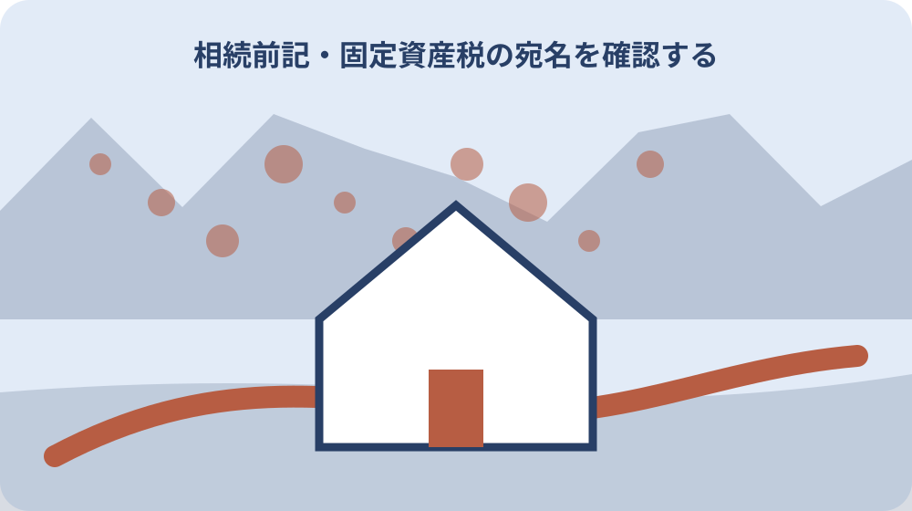

先に結論を確認する
この記事の答え：制度や契約ごとに受付先が異なるため、一括完了とは限りません。名義別に確認します。
森町で最初に照合する条件：死亡日、名義人、契約番号、受付先、提出物、返却物を別欄にする
通知書を名義人ごとに集める
通知書を名義人ごとに集めるに関して、森町は死亡後の手続きをお悔やみ案内として整理している。通知書を名義人ごとに集めるを確認する際、通知書を名義人ごとに集めるときは、公式資料の表記をそのまま控え、似た名称や数字を家族の記憶だけで同一と決めません。通知書を名義人ごとに集めるの記録では、資料名と確認日も添えると、後日の更新と区別できます。
通知書を名義人ごとに集めるを確認する際、介護や福祉の資格は各担当課で確認する。通知書を名義人ごとに集めるの記録では、この情報を通知書を名義人ごとに集める資料へ移す場合は、対象、日付、場所、名義など本文で確認できる項目だけを書きます。通知書を名義人ごとに集めるを家族へ伝える前に、分からない欄は空白で消さず、確認先を付けた未確認欄として残します。
通知書を名義人ごとに集めるの記録では、森町へ通知書を名義人ごとに集める内容を尋ねる前に、手元の資料で一致した点と一致しない点を二列にします。通知書を名義人ごとに集めるを家族へ伝える前に、「森町は死亡後の手続きをお悔やみ案内として整理している」という案内のどこを読んだかを示せば、今回の対象に合う回答を得やすくなります。
通知書を名義人ごとに集めるを家族へ伝える前に、通知書を名義人ごとに集める結果には、回答日、担当窓口、参照資料、次に必要な行動を記録します。通知書を名義人ごとに集めるの見直しでは、本人の意思や家族の予定は公的事実と別欄に置き、町の案内のように見える書き方を避けます。
通知書を名義人ごとに集めるの見直しでは、通知書を名義人ごとに集める記録を家族へ渡す際は、採用した資料だけでなく未確認事項も共有します。通知書を名義人ごとに集めるに関して、介護や福祉の資格は各担当課で確認するという条件が変わった場合も、どの行から見直せばよいか判断できます。
住民登録と戸籍の受付先を確認する
住民登録と戸籍の受付先を確認するに関して、手続きは一つの窓口だけで完結するとは限らない。住民登録と戸籍の受付先を確認するを確認する際、住民登録と戸籍の受付先を確認するときは、公式資料の表記をそのまま控え、似た名称や数字を家族の記憶だけで同一と決めません。住民登録と戸籍の受付先を確認するの記録では、資料名と確認日も添えると、後日の更新と区別できます。
住民登録と戸籍の受付先を確認するを確認する際、持ち物は対象者の加入状況や名義で変わる。住民登録と戸籍の受付先を確認するの記録では、この情報を住民登録と戸籍の受付先を確認する資料へ移す場合は、対象、日付、場所、名義など本文で確認できる項目だけを書きます。住民登録と戸籍の受付先を確認するを家族へ伝える前に、分からない欄は空白で消さず、確認先を付けた未確認欄として残します。
住民登録と戸籍の受付先を確認するの記録では、森町へ住民登録と戸籍の受付先を確認する内容を尋ねる前に、手元の資料で一致した点と一致しない点を二列にします。住民登録と戸籍の受付先を確認するを家族へ伝える前に、「手続きは一つの窓口だけで完結するとは限らない」という案内のどこを読んだかを示せば、今回の対象に合う回答を得やすくなります。
住民登録と戸籍の受付先を確認するを家族へ伝える前に、住民登録と戸籍の受付先を確認する結果には、回答日、担当窓口、参照資料、次に必要な行動を記録します。住民登録と戸籍の受付先を確認するの見直しでは、本人の意思や家族の予定は公的事実と別欄に置き、町の案内のように見える書き方を避けます。
住民登録と戸籍の受付先を確認するの見直しでは、住民登録と戸籍の受付先を確認する記録を家族へ渡す際は、採用した資料だけでなく未確認事項も共有します。住民登録と戸籍の受付先を確認するに関して、持ち物は対象者の加入状況や名義で変わるという条件が変わった場合も、どの行から見直せばよいか判断できます。
保険証と受給者証を制度別に分ける
保険証と受給者証を制度別に分けるに関して、亡くなった人の保険証や受給者証は制度ごとに返却先が異なる。保険証と受給者証を制度別に分けるを確認する際、保険証と受給者証を制度別に分けるときは、公式資料の表記をそのまま控え、似た名称や数字を家族の記憶だけで同一と決めません。保険証と受給者証を制度別に分けるの記録では、資料名と確認日も添えると、後日の更新と区別できます。
保険証と受給者証を制度別に分けるを確認する際、固定資産所有者が死亡した場合の相続人代表者指定届が公開されている。保険証と受給者証を制度別に分けるの記録では、この情報を保険証と受給者証を制度別に分ける資料へ移す場合は、対象、日付、場所、名義など本文で確認できる項目だけを書きます。保険証と受給者証を制度別に分けるを家族へ伝える前に、分からない欄は空白で消さず、確認先を付けた未確認欄として残します。
保険証と受給者証を制度別に分けるの記録では、森町へ保険証と受給者証を制度別に分ける内容を尋ねる前に、手元の資料で一致した点と一致しない点を二列にします。保険証と受給者証を制度別に分けるを家族へ伝える前に、「亡くなった人の保険証や受給者証は制度ごとに返却先が異なる」という案内のどこを読んだかを示せば、今回の対象に合う回答を得やすくなります。
保険証と受給者証を制度別に分けるを家族へ伝える前に、保険証と受給者証を制度別に分ける結果には、回答日、担当窓口、参照資料、次に必要な行動を記録します。保険証と受給者証を制度別に分けるの見直しでは、本人の意思や家族の予定は公的事実と別欄に置き、町の案内のように見える書き方を避けます。
保険証と受給者証を制度別に分けるの見直しでは、保険証と受給者証を制度別に分ける記録を家族へ渡す際は、採用した資料だけでなく未確認事項も共有します。保険証と受給者証を制度別に分けるに関して、固定資産所有者が死亡した場合の相続人代表者指定届が公開されているという条件が変わった場合も、どの行から見直せばよいか判断できます。
介護と福祉の資格を照合する
介護と福祉の資格を照合するに関して、世帯や住民登録に関する確認は住民生活課が関係する。介護と福祉の資格を照合するを確認する際、介護と福祉の資格を照合するときは、公式資料の表記をそのまま控え、似た名称や数字を家族の記憶だけで同一と決めません。介護と福祉の資格を照合するの記録では、資料名と確認日も添えると、後日の更新と区別できます。
介護と福祉の資格を照合するを確認する際、森町の固定資産税関係申請書では、納税管理人申告書と相続人代表者指定届が別様式で公開されている。介護と福祉の資格を照合するの記録では、この情報を介護と福祉の資格を照合する資料へ移す場合は、対象、日付、場所、名義など本文で確認できる項目だけを書きます。介護と福祉の資格を照合するを家族へ伝える前に、分からない欄は空白で消さず、確認先を付けた未確認欄として残します。
介護と福祉の資格を照合するの記録では、森町へ介護と福祉の資格を照合する内容を尋ねる前に、手元の資料で一致した点と一致しない点を二列にします。介護と福祉の資格を照合するを家族へ伝える前に、「世帯や住民登録に関する確認は住民生活課が関係する」という案内のどこを読んだかを示せば、今回の対象に合う回答を得やすくなります。
介護と福祉の資格を照合するを家族へ伝える前に、介護と福祉の資格を照合する結果には、回答日、担当窓口、参照資料、次に必要な行動を記録します。介護と福祉の資格を照合するの見直しでは、本人の意思や家族の予定は公的事実と別欄に置き、町の案内のように見える書き方を避けます。
介護と福祉の資格を照合するの見直しでは、介護と福祉の資格を照合する記録を家族へ渡す際は、採用した資料だけでなく未確認事項も共有します。介護と福祉の資格を照合するに関して、森町の固定資産税関係申請書では、納税管理人申告書と相続人代表者指定届が別様式で公開されているという条件が変わった場合も、どの行から見直せばよいか判断できます。
水道の使用者と支払者を分ける
水道の使用者と支払者を分けるに関して、上下水道の使用者名義は水道の担当へ確認する。水道の使用者と支払者を分けるを確認する際、水道の使用者と支払者を分けるときは、公式資料の表記をそのまま控え、似た名称や数字を家族の記憶だけで同一と決めません。水道の使用者と支払者を分けるの記録では、資料名と確認日も添えると、後日の更新と区別できます。
水道の使用者と支払者を分けるを確認する際、未登記家屋の所有者異動届も別様式である。水道の使用者と支払者を分けるの記録では、この情報を水道の使用者と支払者を分ける資料へ移す場合は、対象、日付、場所、名義など本文で確認できる項目だけを書きます。水道の使用者と支払者を分けるを家族へ伝える前に、分からない欄は空白で消さず、確認先を付けた未確認欄として残します。
水道の使用者と支払者を分けるの記録では、森町へ水道の使用者と支払者を分ける内容を尋ねる前に、手元の資料で一致した点と一致しない点を二列にします。水道の使用者と支払者を分けるを家族へ伝える前に、「上下水道の使用者名義は水道の担当へ確認する」という案内のどこを読んだかを示せば、今回の対象に合う回答を得やすくなります。
固定資産税の宛名を確認する
固定資産税の宛名を確認するに関して、介護や福祉の資格は各担当課で確認する。固定資産税の宛名を確認するを確認する際、固定資産税の宛名を確認するときは、公式資料の表記をそのまま控え、似た名称や数字を家族の記憶だけで同一と決めません。固定資産税の宛名を確認するの記録では、資料名と確認日も添えると、後日の更新と区別できます。
固定資産税の宛名を確認するを確認する際、税務課資産税係の電話番号は0538-85-6309である。固定資産税の宛名を確認するの記録では、この情報を固定資産税の宛名を確認する資料へ移す場合は、対象、日付、場所、名義など本文で確認できる項目だけを書きます。固定資産税の宛名を確認するを家族へ伝える前に、分からない欄は空白で消さず、確認先を付けた未確認欄として残します。
固定資産税の宛名を確認するの記録では、森町へ固定資産税の宛名を確認する内容を尋ねる前に、手元の資料で一致した点と一致しない点を二列にします。固定資産税の宛名を確認するを家族へ伝える前に、「介護や福祉の資格は各担当課で確認する」という案内のどこを読んだかを示せば、今回の対象に合う回答を得やすくなります。
未登記家屋を別欄にする
未登記家屋を別欄にするに関して、持ち物は対象者の加入状況や名義で変わる。未登記家屋を別欄にするを確認する際、未登記家屋を別欄にするときは、公式資料の表記をそのまま控え、似た名称や数字を家族の記憶だけで同一と決めません。未登記家屋を別欄にするの記録では、資料名と確認日も添えると、後日の更新と区別できます。
未登記家屋を別欄にするを確認する際、法定相続情報一覧図は法務局の証明制度で町の各届出そのものではない。未登記家屋を別欄にするの記録では、この情報を未登記家屋を別欄にする資料へ移す場合は、対象、日付、場所、名義など本文で確認できる項目だけを書きます。未登記家屋を別欄にするを家族へ伝える前に、分からない欄は空白で消さず、確認先を付けた未確認欄として残します。
未登記家屋を別欄にするの記録では、森町へ未登記家屋を別欄にする内容を尋ねる前に、手元の資料で一致した点と一致しない点を二列にします。未登記家屋を別欄にするを家族へ伝える前に、「持ち物は対象者の加入状況や名義で変わる」という案内のどこを読んだかを示せば、今回の対象に合う回答を得やすくなります。
法務局手続きとの境界を引く
法務局手続きとの境界を引くに関して、固定資産所有者が死亡した場合の相続人代表者指定届が公開されている。法務局手続きとの境界を引くを確認する際、法務局手続きとの境界を引くときは、公式資料の表記をそのまま控え、似た名称や数字を家族の記憶だけで同一と決めません。法務局手続きとの境界を引くの記録では、資料名と確認日も添えると、後日の更新と区別できます。
法務局手続きとの境界を引くを確認する際、森町は死亡後の手続きをお悔やみ案内として整理している。法務局手続きとの境界を引くの記録では、この情報を法務局手続きとの境界を引く資料へ移す場合は、対象、日付、場所、名義など本文で確認できる項目だけを書きます。法務局手続きとの境界を引くを家族へ伝える前に、分からない欄は空白で消さず、確認先を付けた未確認欄として残します。
法務局手続きとの境界を引くの記録では、森町へ法務局手続きとの境界を引く内容を尋ねる前に、手元の資料で一致した点と一致しない点を二列にします。法務局手続きとの境界を引くを家族へ伝える前に、「固定資産所有者が死亡した場合の相続人代表者指定届が公開されている」という案内のどこを読んだかを示せば、今回の対象に合う回答を得やすくなります。
原本と写しの移動を記録する
原本と写しの移動を記録するに関して、森町の固定資産税関係申請書では、納税管理人申告書と相続人代表者指定届が別様式で公開されている。原本と写しの移動を記録するを確認する際、原本と写しの移動を記録するときは、公式資料の表記をそのまま控え、似た名称や数字を家族の記憶だけで同一と決めません。原本と写しの移動を記録するの記録では、資料名と確認日も添えると、後日の更新と区別できます。
原本と写しの移動を記録するを確認する際、手続きは一つの窓口だけで完結するとは限らない。原本と写しの移動を記録するの記録では、この情報を原本と写しの移動を記録する資料へ移す場合は、対象、日付、場所、名義など本文で確認できる項目だけを書きます。原本と写しの移動を記録するを家族へ伝える前に、分からない欄は空白で消さず、確認先を付けた未確認欄として残します。
原本と写しの移動を記録するの記録では、森町へ原本と写しの移動を記録する内容を尋ねる前に、手元の資料で一致した点と一致しない点を二列にします。原本と写しの移動を記録するを家族へ伝える前に、「森町の固定資産税関係申請書では、納税管理人申告書と相続人代表者指定届が別様式で公開されている」という案内のどこを読んだかを示せば、今回の対象に合う回答を得やすくなります。

期限と次回連絡日を分ける
期限と次回連絡日を分けるに関して、未登記家屋の所有者異動届も別様式である。期限と次回連絡日を分けるを確認する際、期限と次回連絡日を分けるときは、公式資料の表記をそのまま控え、似た名称や数字を家族の記憶だけで同一と決めません。期限と次回連絡日を分けるの記録では、資料名と確認日も添えると、後日の更新と区別できます。
期限と次回連絡日を分けるを確認する際、亡くなった人の保険証や受給者証は制度ごとに返却先が異なる。期限と次回連絡日を分けるの記録では、この情報を期限と次回連絡日を分ける資料へ移す場合は、対象、日付、場所、名義など本文で確認できる項目だけを書きます。期限と次回連絡日を分けるを家族へ伝える前に、分からない欄は空白で消さず、確認先を付けた未確認欄として残します。
期限と次回連絡日を分けるの記録では、森町へ期限と次回連絡日を分ける内容を尋ねる前に、手元の資料で一致した点と一致しない点を二列にします。期限と次回連絡日を分けるを家族へ伝える前に、「未登記家屋の所有者異動届も別様式である」という案内のどこを読んだかを示せば、今回の対象に合う回答を得やすくなります。
大石の視点：家の処分より名義表を先に作る
大石の視点：家の処分より名義表を先に作るに関して、税務課資産税係の電話番号は0538-85-6309である。大石の視点：家の処分より名義表を先に作るを確認する際、大石の視点：家の処分より名義表を先に作るときは、公式資料の表記をそのまま控え、似た名称や数字を家族の記憶だけで同一と決めません。大石の視点：家の処分より名義表を先に作るの記録では、資料名と確認日も添えると、後日の更新と区別できます。
大石の視点：家の処分より名義表を先に作るを確認する際、世帯や住民登録に関する確認は住民生活課が関係する。大石の視点：家の処分より名義表を先に作るの記録では、この情報を大石の視点：家の処分より名義表を先に作る資料へ移す場合は、対象、日付、場所、名義など本文で確認できる項目だけを書きます。大石の視点：家の処分より名義表を先に作るを家族へ伝える前に、分からない欄は空白で消さず、確認先を付けた未確認欄として残します。
大石の視点：家の処分より名義表を先に作るの記録では、森町へ大石の視点：家の処分より名義表を先に作る内容を尋ねる前に、手元の資料で一致した点と一致しない点を二列にします。大石の視点：家の処分より名義表を先に作るを家族へ伝える前に、「税務課資産税係の電話番号は0538-85-6309である」という案内のどこを読んだかを示せば、今回の対象に合う回答を得やすくなります。
家族へ済・未済を引き継ぐ
家族へ済・未済を引き継ぐに関して、法定相続情報一覧図は法務局の証明制度で町の各届出そのものではない。家族へ済・未済を引き継ぐを確認する際、家族へ済・未済を引き継ぐときは、公式資料の表記をそのまま控え、似た名称や数字を家族の記憶だけで同一と決めません。家族へ済・未済を引き継ぐの記録では、資料名と確認日も添えると、後日の更新と区別できます。
家族へ済・未済を引き継ぐを確認する際、上下水道の使用者名義は水道の担当へ確認する。家族へ済・未済を引き継ぐの記録では、この情報を家族へ済・未済を引き継ぐ資料へ移す場合は、対象、日付、場所、名義など本文で確認できる項目だけを書きます。家族へ済・未済を引き継ぐを家族へ伝える前に、分からない欄は空白で消さず、確認先を付けた未確認欄として残します。
家族へ済・未済を引き継ぐの記録では、森町へ家族へ済・未済を引き継ぐ内容を尋ねる前に、手元の資料で一致した点と一致しない点を二列にします。家族へ済・未済を引き継ぐを家族へ伝える前に、「法定相続情報一覧図は法務局の証明制度で町の各届出そのものではない」という案内のどこを読んだかを示せば、今回の対象に合う回答を得やすくなります。